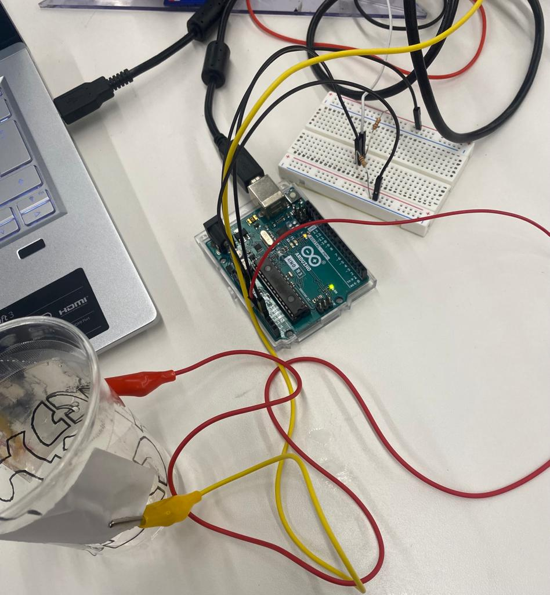

<br>
#### Week 6: Electronic Input Devices
<i> Assignment:
1. Use a sensor from the kit to measure a physical quantity with your microcontroller. Calibrate your sensor (describe the range between its min and max values, and whether you can control this range). Show data in the form of a table or graph.
2. Do the same as (1) with a sensor you have fabricated yourself using copper tape, aluminum foil, Velostat, etc. </i>
And here is a <a href="https://nathanmelenbrink.github.io/intro-dig-fab/06_input/index.html">Link to the original assignment page</a>
<h4>Capacitive Sensor: Liquid Volume Sensor</h4>
<p> For the second part of the assignment, I decided to make a liquid volume sensor.
For this I used:</p>
<ul>
<li>Arduino Uno or similar </li>
<li>Copper plates</li>
<li>Wires</li>
<li>Alligator clips</li>
<li>Breadboard</li>
<li>2 Resistors</li>
<li>A cup</li>
<li>Water</li>
</ul>

<p> This is the code I used.</p>
<p>I programmed the display of measured values every half-second for 45 seconds. I did this because it's impossible to zoom out on the serial plotter or copy and paste all the values from the serial monitor at once. I know the possibility exists but I couldn't do it. In any case, I didn't spend enough time on it. I then exported the values displayed in the serial monitor to excel where I built a graph.</p>
<p>I started with an empty glass of water. I then filled it halfway and then completely. On the graph, you can clearly see the different levels.</p>